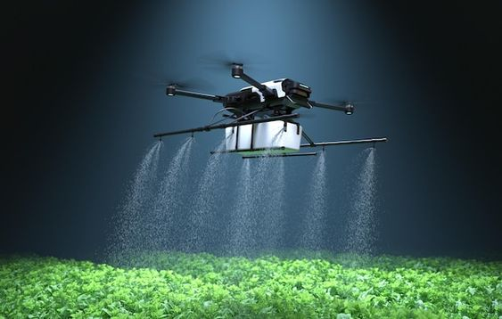

The 5 Best Soil Moisture Sensors for Agriculture
- Price: $900
- Arable was founded in 2014 with their headquarters in the USA. They have global reach and operate in 30 countries. Their flagship sensor is the Mark2, users can access data on rainfall, crop water demand, water stress, microclimate, canopy biomass, and chlorophyll levels through their smart data platform.
- Support: 24 hours a day, 7 days a week
In its essence, soil moisture sensors use an electrical current to detect the presence of water in the soil. These sensors then send the information to a computer that displays the results digitally. With technological advancements and the evolution of precision agriculture, current soil moisture sensors have developed in such a way to provide much more than just soil moisture measurements. They’re often paired with a comprehensive digital data platform, so users have access to a range of valuable field, crop and weather data. Insights from this data can lead to better decision-making resulting in optimal use of resources, profitable yield and even yield increases.
What is the best soil moisture sensor to buy?
Arable
- Price: $100
- Arable was founded in 2014 with their headquarters in the USA. They have global reach and operate in 30 countries. Their flagship sensor is the Mark2, users can access data on rainfall, crop water demand, water stress, microclimate, canopy biomass, and chlorophyll levels through their smart data platform.
- Support: 24 hours a day, 7 days a week
Sensoterra
- Price: $200
- Sensoterra is a Dutch company founded in 2015. They focus mainly on water management solutions and their product range includes single and multi-depth soil moisture sensors. Users can access data through the Sensoterra app or a platform from one of their Integration Partners.
- Support: 24 hours a day, 7 days a week
Sentek
- Price: $300
- Sentek was founded in Australia and has been around since 1991. They design, develop, manufacture, support and globally distribute products for measuring and managing soil moisture, salinity and temperature. They have 6 soil moisture probes included in their offering, including the Enviroscan that can measure from 0.5 up to 40m.
- Support: 24 hours a day, 7 days a week
Yves Behar

- Price: $400
- Special features: Water detection sensor, Soil temperature sensor, Moisture sensor, Precise irrigation system, Precise weather monitoring, Advanced analytics
- Support: 24 hours a day, 7 days a week
Soil moisture sensors for agriculture - Renke
- Price: $500
- Special features: Water detection sensor, Soil temperature sensor, Moisture sensor, Precise irrigation system, Precise weather monitoring, Advanced analytics, Advanced crop monitoring
- Support: 24 hours a day, 7 days a week